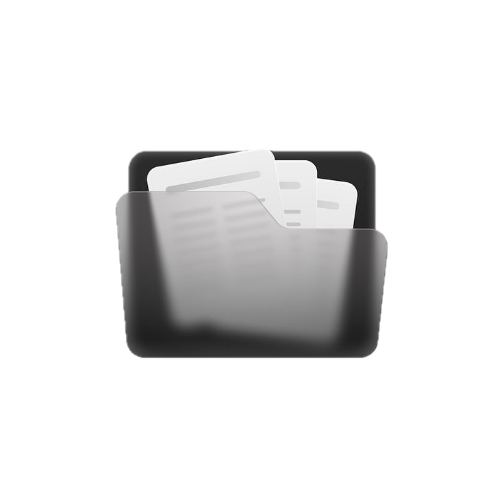
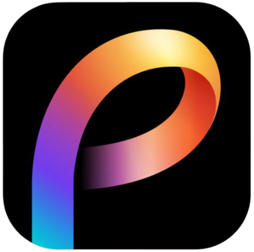

Our Research Tools
Everything you need for modern academic research

RefCheck
Verify and validate academic references with ease. Check DOIs, analyze citations, and ensure your bibliography is accurate and complete.

RefUnlocker
Access academic papers with DOI-to-Sci-Hub integration. Unlock research papers for educational purposes and support open access to knowledge.

PolyViz
Create publication-ready visualizations for your research. Generate charts, graphs, and plots with customizable styles perfect for academic papers.

Paper Summary Studio
Create research summaries at a fingertips, helps you quickly understand research papers by turning PDFs into clear, structured summaries.